Score MAMÁ
Registra variables clínicas, calcula el puntaje y presenta el desglose de cada parámetro.
Protocolo Score MAMÁ y Claves Obstétricas 2025
Una herramienta para profesionales y estudiantes de salud que organiza el protocolo, realiza cálculos deterministas y abre la página exacta de donde proviene cada resultado.
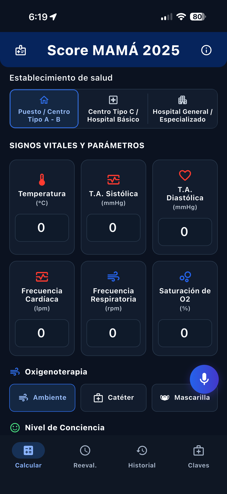
Todo en un solo flujo
La aplicación facilita la consulta sin ocultar el documento que sustenta la información.
Registra variables clínicas, calcula el puntaje y presenta el desglose de cada parámetro.
Localiza coincidencias exactas y variantes dentro del protocolo, sin generar contenido externo.
Consulta activación, equipo, manejo por nivel, anexos y cuadros en una estructura legible.
IPC, índice de choque, vasoactivos, score de moteado y cribado con fórmulas y unidades visibles.
Conserva el historial de evaluaciones y facilita el seguimiento temporal de cada registro.
Reconoce parámetros dictados y exige revisar los valores detectados antes de utilizarlos.
Búsqueda inteligente
Introduce un medicamento, dosis, signo de alarma, anexo o término del protocolo.
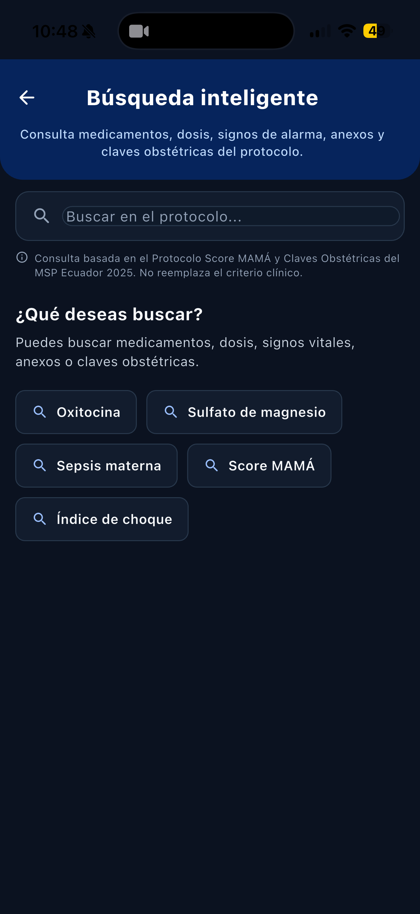
Compara coincidencias, campos reconocidos, clave obstétrica y página de origen.
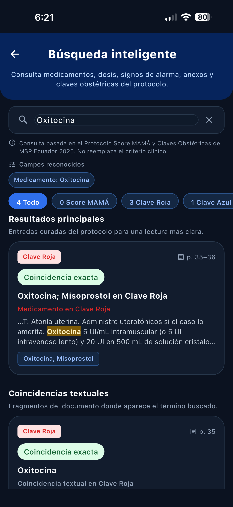
Lee el contexto y abre directamente el documento fuente.
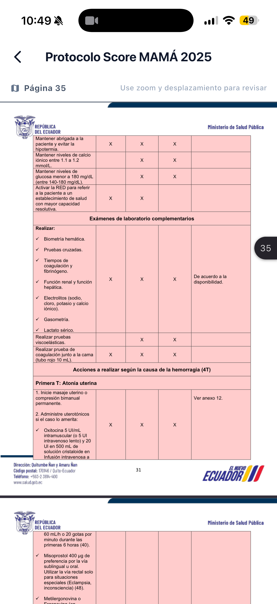
Recorrido por la aplicación
Explora el cálculo, la revisión de resultados, la consulta del protocolo y el seguimiento desde una interfaz diseñada para lectura rápida.
Parámetros, unidades y controles visibles antes de calcular.
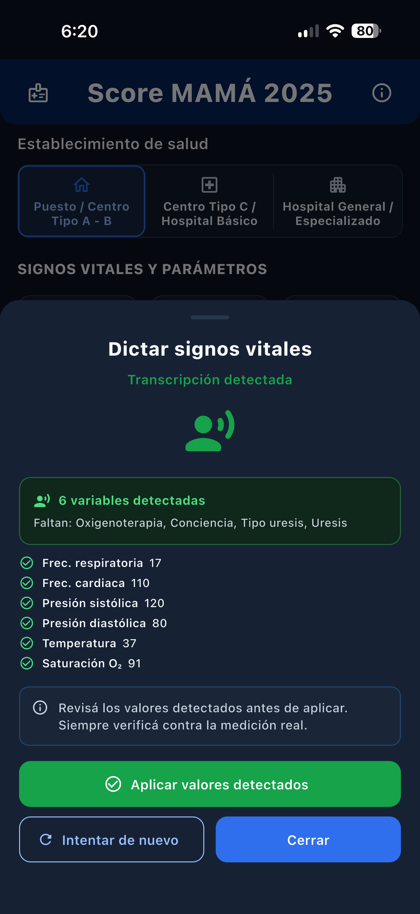
Los valores detectados se presentan para confirmación.
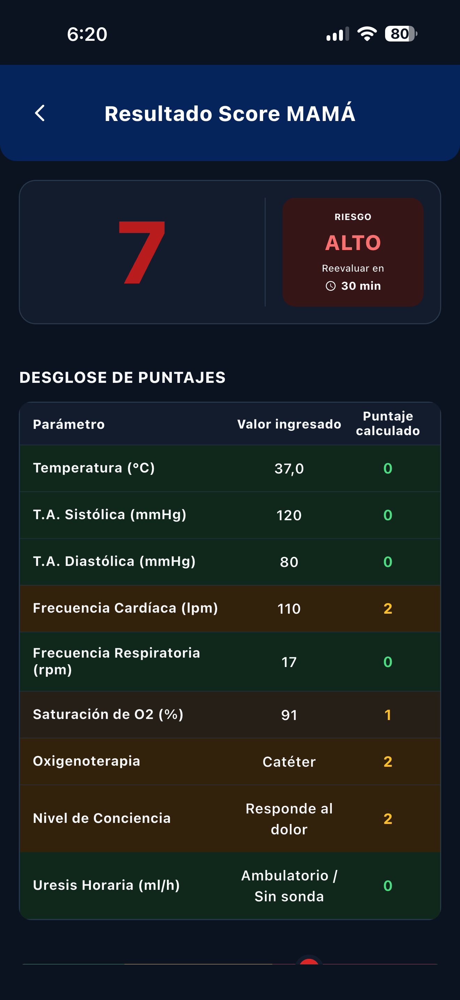
El puntaje conserva la trazabilidad de sus componentes.
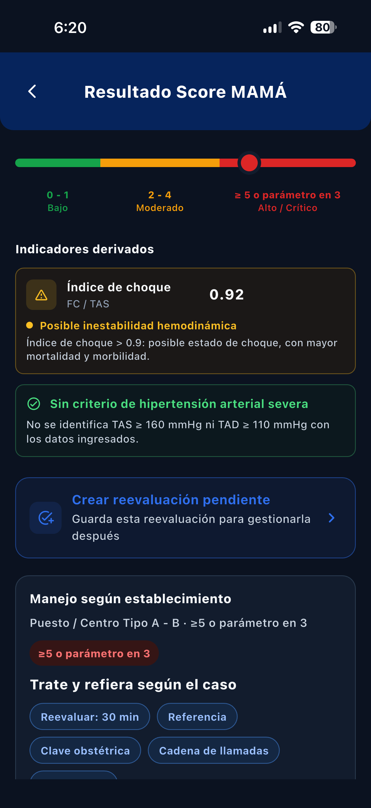
Resultados deterministas con valores y contexto visible.
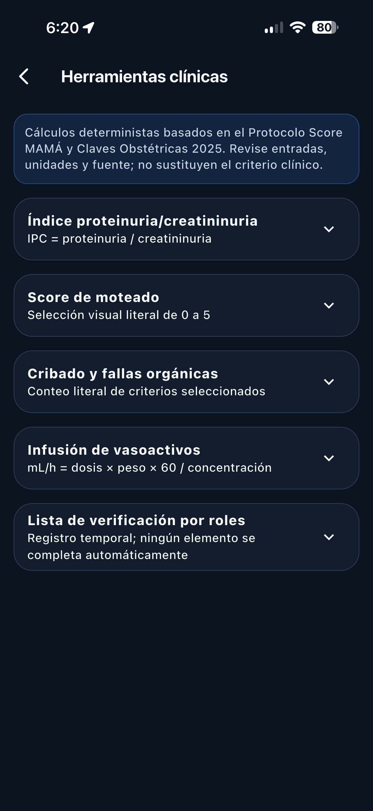
Acceso organizado a calculadoras y escalas protocolarias.
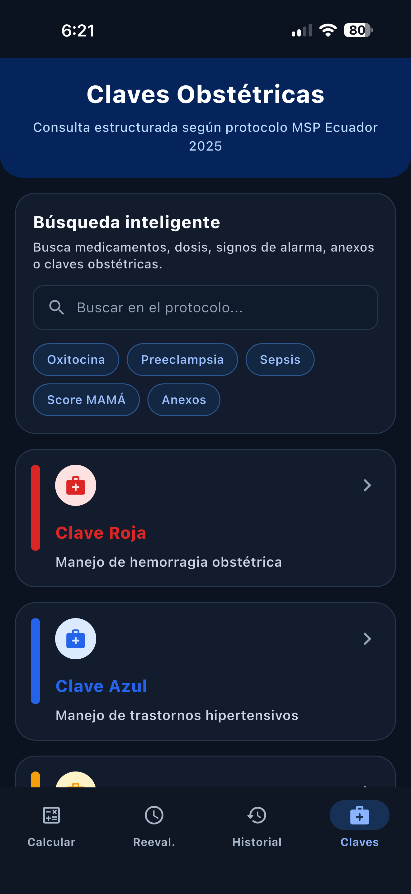
Contenido clínico organizado por clave y función.
Coincidencias resaltadas y acceso a la página fuente.
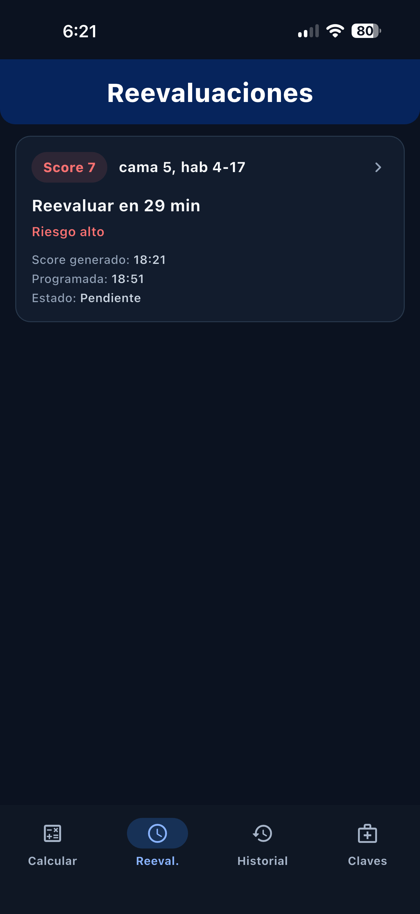
Seguimiento cronológico de los registros realizados.
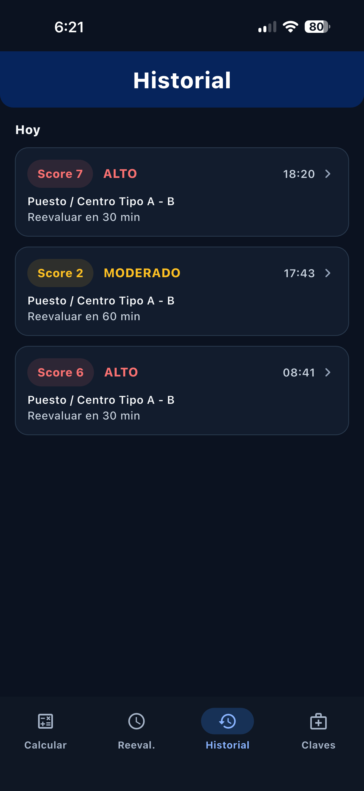
Consulta local de evaluaciones previas y su puntaje.
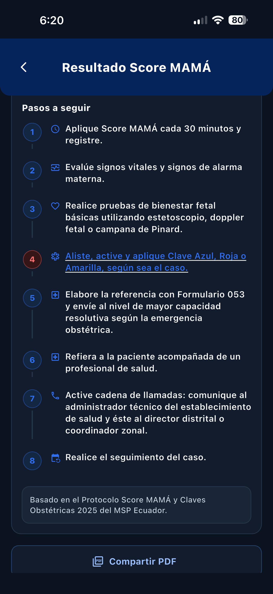
Presentación ordenada del contenido aplicable del protocolo.
Desliza horizontalmente para explorar las pantallas.
Diseñada para ser verificable
Cada herramienta prioriza información determinista, unidades explícitas y navegación hacia el Protocolo Score MAMÁ y Claves Obstétricas 2025.
Búsqueda documental. Los resultados proceden del contenido indexado del protocolo.
Cálculos transparentes. Se muestran fórmula, entradas, unidades y referencia.
Sin diagnóstico automático. La herramienta apoya la consulta y no sustituye el criterio clínico.
Privacidad por diseño. La web no solicita ni recibe información de pacientes.
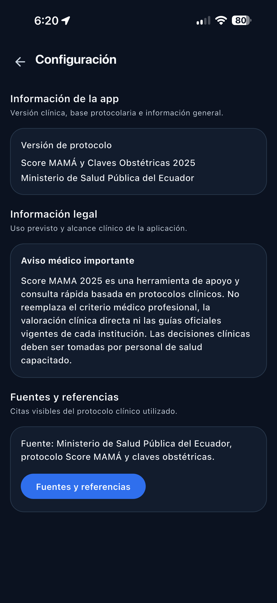
Guía rápida
Calcula Score MAMÁ, consulta una clave o abre la búsqueda del protocolo.
Comprueba siempre el valor y la unidad antes de calcular.
Consulta el desglose, los criterios aplicados y cualquier advertencia visible.
Verifica el contenido dentro del PDF y considera el contexto clínico completo.
Preguntas frecuentes
La aplicación se basa en el Protocolo Score MAMÁ y Claves Obstétricas 2025. No debe interpretarse como una aplicación oficial del MSP salvo autorización institucional expresa.
No. Su propósito es localizar términos y fragmentos dentro del contenido protocolario indexado y facilitar la apertura de la fuente.
No. Ejecutan reglas o fórmulas deterministas publicadas y muestran sus unidades y referencias. La selección de tratamientos y dosis corresponde al profesional.
No. Es una herramienta de consulta. Toda decisión debe considerar la condición de la paciente, la fuente completa y los lineamientos institucionales.
No. Este sitio es informativo y no contiene formularios para ingresar información clínica o identificable.
Disponible para iPhone
Descarga Score MAMÁ 2025 desde la ficha oficial de la aplicación en App Store.